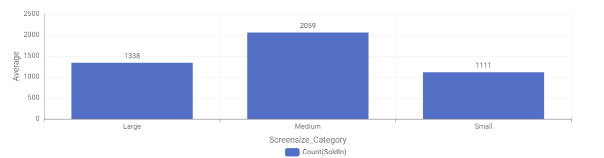
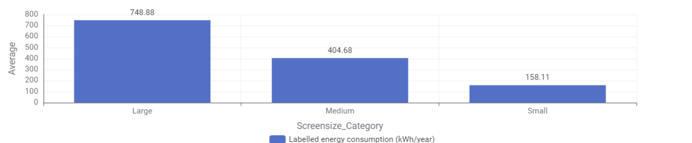
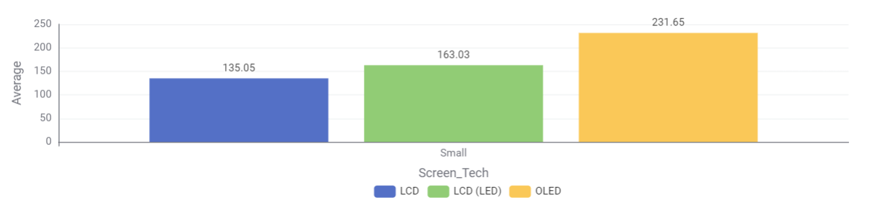

TV Energy Consumption: A Storyboard Analysis
A step-by-step data story demonstrating why compact screens are the smarter choice for modern Australian homes.
1. The Shopper's Dilemma: Choice Overload
Consumers face constant marketing pressure to purchase giant displays. With 4,508 models registered in Australia, shoppers develop a misinformed attitude that "bigger is always better," leading to impulsive purchases without evaluating ongoing energy costs.
Superstores and online retailers display screens in bright showroom lighting, obscuring the fact that larger backlights draw massive amounts of continuous power.
2. Demonstrating the Issue: Skyrocketing Running Costs
Oversized displays create severe real-world problems over time: massive power draw, increased living room heat output, spatial clutter, and eye strain when viewed from standard household distances.
Furthermore, standard TV usage in Australia averages several hours per day per household, turning an inefficient display into an expensive long-term utility burden.
3. Ideas for Overcoming the Issue: The Compact Initiative
To overcome high utility bills, we evaluate a shift toward right-sized compact TVs (≤43"). By prioritizing energy efficiency over raw panel size, households maintain high visual clarity while dramatically cutting annual running costs.
4. Describing the Solution: Right-Sizing Guidelines
Under our proposed framework, small TVs (≤43") consume only 158.11 kWh per year on average. This makes them ideal for bedrooms, studio apartments, kitchens, and home offices without dominating interior decor or needlessly inflating annual energy bills.
5. Before & After Data: The Shocking 4.7x Power Gap
Official Australian energy registration records confirm the dramatic energy gap across standard KNIME size categories:

The chart above illustrates the energy consumption differences across various TV size categories.
The chart above shows the average annual energy consumption (kWh/year) for small, medium, and large TVs based on registered models in Australia.| Size Category | Registered Models | Avg Annual Consumption |
|---|---|---|
| Small (≤ 43") | 1,111 | 158.11 kWh/year |
| Medium (44" – 65") | 2,059 | 404.68 kWh/year |
| Large (≥ 66") | 1,338 | 748.88 kWh/year |
Large displays consume 4.7 times more energy annually than compact screens!
Recommended Viewing Distance Guide
To avoid eye strain and optimize display clarity, match your room size to the appropriate television category:
| Screen Diagonal | Ideal Viewing Distance | Recommended Room Type |
|---|---|---|
| 32" – 43" (Small) | 1.2 m – 1.8 m | Bedrooms, Study, Kitchen, Small Apartments |
| 44" – 65" (Medium) | 1.8 m – 2.5 m | Standard Living Rooms, Family Rooms |
| 66" + (Large) | 2.5 m + | Dedicated Home Cinema Rooms |
Screen Technology Comparison for Small TVs (≤43")
When selecting a compact television (≤43"), the underlying display panel technology heavily influences annual energy efficiency. Here is how screen technologies compare within the Small TV size category:

| Screen Technology | Avg Annual Consumption (kWh/year) | Est. Annual Cost ($ AUD) | Efficiency Rank |
|---|---|---|---|
| Standard LCD | 135.05 kWh | $40.27 | 1st (Most Efficient) |
| LCD (LED Backlit) | 163.03 kWh | $48.62 | 2nd (Balanced Choice) |
| OLED | 231.65 kWh | $69.08 | 3rd (Highest Energy Draw) |
Note: While OLED panels offer superior contrast and color depth, they consume significantly more energy than standard LCDs in the Small TV category. Consumers seeking energy efficiency should prioritize LCD-based models.
6. Recommendation: Choose Compact, Save Energy
The evidence is clear: compact televisions deliver superior cost-efficiency, room flexibility, and optimal eye comfort. We recommend households choose right-sized TVs (≤43") to save up to 79% on TV energy expenses each year.